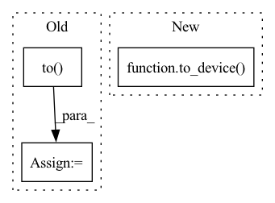

Pattern ID :11587
Before Change
prompt_ids = batch["input_ids"].to(torch.cuda.current_device())
p_mask = batch["attention_mask"].to(torch.cuda.current_device())
labels = batch["labels"].to( torch.cuda.current_device())
// prompt_ids = prompt_ids.squeeze(1).cuda()
// p_mask = p_mask.squeeze(1).cuda()
// prompt_logits = self.model(prompt_ids, attention_mask=p_mask, labels=labels)
After Change
loss_sum = 0
num_seen = 0
for batch in self.eval_dataloader:
batch = to_device( batch, torch.cuda.current_device())
outputs = self.model(batch["input_ids"],
attention_mask=batch["attention_mask"],
labels=batch["labels"])
loss = outputs.lossIn pattern: SUPERPATTERN
Frequency: 4
Non-data size: 3
Instances Fragment ID: 39266228
Project Name: hpcaitech/colossalai
Commit Name: 6ef70114628b83d39716e9746c062c980cd4a3be
Time: 2023-04-27
Author: lhx0217@gmail.com
File Name: applications/Chat/coati/trainer/sft.py
M Class Name: SFTTrainer
N Class Name: SFTTrainer
M Method Name: fit(3)
N Method Name: fit(3)
M Parent Class: Trainer
N Parent Class: Trainer
M File Name: applications/Chat/coati/trainer/sft.py
N File Name: applications/Chat/coati/trainer/sft.py
M Start Line: 87
M End Line: 149
N Start Line: 78
N End Line: 129
Before Change
// if data_parallel:
// model = nn.DataParallel(model).to(device)
// else:
model = model.to( device)
return model
After Change
def model_from_desc(model_desc, device, droppath:bool, affine:bool)->Model:
model = Model(model_desc, droppath=droppath, affine=affine)
return to_device( model) // type: ignore
def to_device(model:nn.Module, device)->nn.Module:
// TODO: enable DataParallel Fragment ID: 39266215
Project Name: microsoft/archai
Commit Name: e40777ef35edf0fbb25ebaabf0cf8786f68a2086
Time: 2020-05-18
Author: shitals@microsoft.com
File Name: archai/nas/nas_utils.py
M Class Name: AnonimousClass
N Class Name: AnonimousClass
M Method Name: model_from_desc(4)
N Method Name: model_from_desc(4)
M Parent Class:
N Parent Class:
M File Name: archai/nas/nas_utils.py
N File Name: archai/nas/nas_utils.py
M Start Line: 54
M End Line: 60
N Start Line: 55
N End Line: 56
Before Change
if not isinstance(x, (list, tuple)):
x = [x]
x = [_x.to(device) if hasattr(x, "to") else _x for _x in x]
y = y.to( device)
////////////////////////////////////////////////
x, U, V = x
U.requires_grad = TrueAfter Change
optimizer = self.optimizer
loss_fn = self.loss
optimizer.zero_grad()
x, y = to_device( x, y, device=device)
////////////////////////////////////////////////
x, U, V = x
U.requires_grad = True Fragment ID: 39266224
Project Name: edisonleeeee/graphgallery
Commit Name: eb44cb9e5d0b12f081c365b0135af2b31cd3e19b
Time: 2021-08-07
Author: cnljt@outlook.com
File Name: graphgallery/nn/models/pytorch/sat/base_sat.py
M Class Name: BaseSAT
N Class Name: BaseSAT
M Method Name: train_step_on_batch(5)
N Method Name: train_step_on_batch(5)
M Parent Class: TorchKeras
N Parent Class: TorchKeras
M File Name: graphgallery/nn/models/pytorch/sat/base_sat.py
N File Name: graphgallery/nn/models/pytorch/sat/base_sat.py
M Start Line: 14
M End Line: 53
N Start Line: 15
N End Line: 47
Before Change
batch = next(iter(self.pretrain_dataloader))
ptx = batch["input_ids"].to(torch.cuda.current_device())
label = batch["labels"].to(torch.cuda.current_device())[:, 1:]
attention_mask = batch["attention_mask"].to( torch.cuda.current_device())
ptx_log_probs = self.actor.get_base_model()(ptx, attention_mask=attention_mask)["logits"][..., :-1, :]
ptx_loss = self.ptx_loss_fn(ptx_log_probs.view(-1, ptx_log_probs.size(-1)), label.view(-1))
actor_loss = ptx_loss * self.ptx_coef + actor_loss * (1 - self.ptx_coef)
After Change
// ptx loss
if self.ptx_coef != 0:
batch = next(iter(self.pretrain_dataloader))
batch = to_device( batch, self.device)
ptx_log_probs = self.actor.get_base_model()(batch["input_ids"],
attention_mask=batch["attention_mask"])["logits"]
ptx_loss = self.ptx_loss_fn(ptx_log_probs, batch["labels"])
actor_loss = ptx_loss * self.ptx_coef + actor_loss * (1 - self.ptx_coef) Fragment ID: 39266217
Project Name: hpcaitech/colossalai
Commit Name: 2a951955ade14fd067bc5bee34a5ff7e57513ac6
Time: 2023-04-26
Author: lhx0217@gmail.com
File Name: applications/Chat/coati/trainer/ppo.py
M Class Name: PPOTrainer
N Class Name: PPOTrainer
M Method Name: training_step(2)
N Method Name: training_step(2)
M Parent Class: Trainer
N Parent Class: Trainer
M File Name: applications/Chat/coati/trainer/ppo.py
N File Name: applications/Chat/coati/trainer/ppo.py
M Start Line: 176
M End Line: 181
N Start Line: 176
N End Line: 180